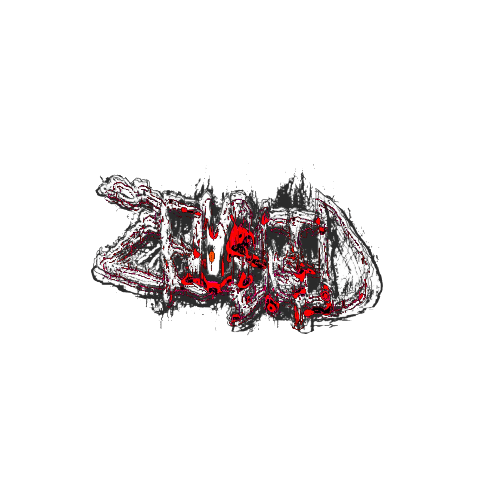
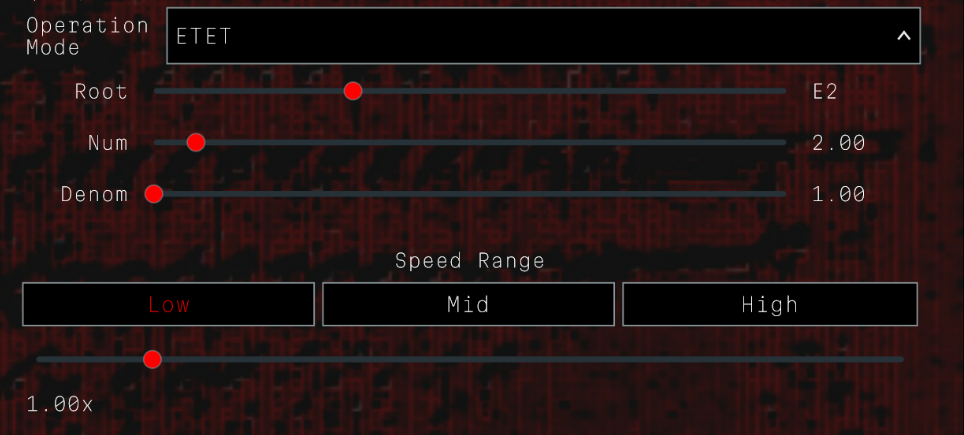
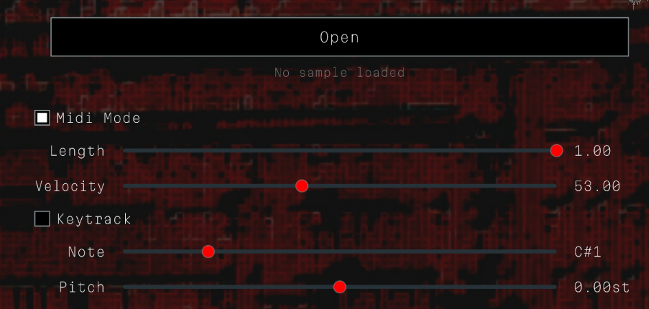

Extratone MIDI sequencer and sampler
Zenbleed is a free and open source VST plugin designed specifically for creating Extratone and related genres. It operates both as a MIDI sequencer and sampler to generate Extratone in real time by either outputting MIDI or outputting audio from an internally loaded sample.
The defining feature of Zenbleed is its ability to not only generate notes at extremely high speeds but also to freely control that speed as if it were a pitch control on an oscillator. The main speed slider has three speed ranges to choose from which represent 16x, 64x, and 256x maximum speed (relative to the host's BPM).
There are three modes of operation which affect how the speed is controlled: Default mode, Tuned mode, and Extratone Equal Temperament (ETET) mode. Default mode simply uses the host's BPM as a reference point and multiplies that value by the value of the speed slider. Tuned mode effectively tunes the extratone to standard 12TET tuning by playing notes at a speed equal to the frequency of the input note, so playing the note A4 would play extratone at 440Hz (26,400 BPM). The third mode is called Extratone Equal Temperament, which uses the host's BPM as a baseline and is controlled by three parameters: root note, numerator, and denominator. The effective speed is calculated as ((numerator / denominator)^(playedNote - rootNote)) * speedSlider * BPM, but if the root note is played (meaning playedNote - rootNote == 0), then the speed is calculated as speedSlider * BPM, which is equivalent to default mode. In simpler terms, to play the root note causes the speed to match the host's BPM, but each time you play one note higher, the frequency is multiplied by numerator / denominator (the inverse applies to playing lower notes). This mode allows you to tune your extratone in strange ways but is also useful for simplifying the process of making standard Speedcore and Extratone. If you set the numerator and denominator to 2 / 1 (which is the default), then each note higher or lower doubles or halves the speed, which is a common technique in Extratone. With standard tools you have to copy and paste MIDI notes of different lengths in order to achieve this effect, but ETET makes this process slightly faster by allowing you to play different notes to generate different speeds.

The original purpose for Zenbleed was to create a flexible MIDI sequencer for making Extratone, but Zenbleed also has the ability to load samples and trigger them internally (by clicking the open button and selecting a file in the file dialog). Zenbleed also features other controls to change the way notes are played. The length slider controls how long each note is held, and at high speeds it effectively functions like Pulse Width Modulation. The velocity slider only applies to MIDI mode and it controls the velocity of each output note. If Zenbleed is routed to a synth and velocity is configured to modulate a paramater in that synth, then controlling the velocity slider while playing Extratone will create a modulation effect that sounds quantized. Two other parameters that apply specifically to MIDI mode are the keytrack checkbox and the note slider. If keytrack is turned on, then the MIDI note triggered on the output will be the same as the input note. If keytrack is off, then the output note will be equal to whatever note is selected by the note slider. Interesting effects can be created by turning keytrack off and modulating the note slider. The last parameter is the pitch slider and it applies only to sampler mode. This slider simply controls the pitch of the sample being played.

Demo 01: Audio-Rate Sequencing
Demo 02: Resampled Textures
You can submit feedback on this website via Google Forms, or alternatively you can message me on Discord @Dspivey or open an issue on Github.